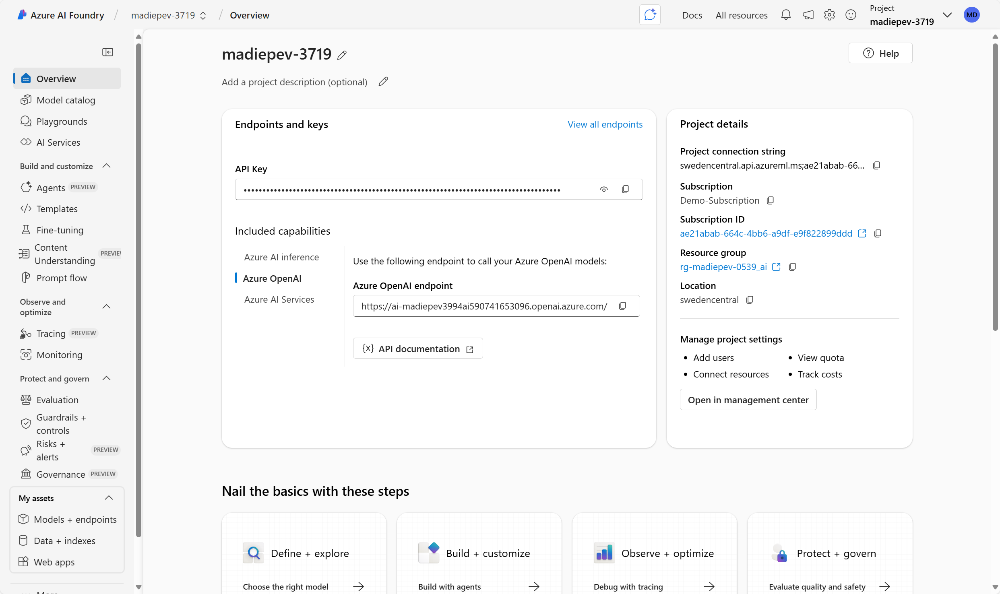

1
Project Name
2
Navigation Menu
3
API Key & Endpoints
4
Azure OpenAI Endpoint
5
Project Details
6
Getting Started Guide
Welcome to Azure AI Foundry
Click on any numbered hotspot above to learn about that feature. Azure AI Foundry is Microsoft's comprehensive platform for building, deploying, and managing AI applications.
0 of 6 features explored